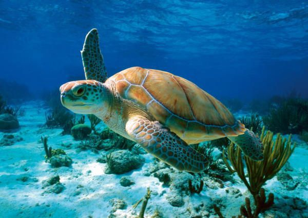

Цікаві Факти про Черепах
1. Черепаха найдавніша рептилія на Землі. Перша відома науці черепаха з'явилися 220 мільйонів років тому. Розміри доісторичних черепах були величезні – діаметр панцира сягав 3,6 метрів. Сьогодні найбільша черепаха – шкіряста черепаха – розмір її панцира більше 2 метрів в діаметрі, а вага – 500-600 кг.
2. Черепахи здатні голодувати тривалий час. Черепаха може прожити без їжі 18 місяців.
3. Черепахи населяють всі континенти Землі. Не черепахи зустрічаються лише в Антарктиді.
4. Є багато видів черепах. Їх налічується понад 300 видів. Також вони можуть бути так і наземними, так і підземними, водними
5. Найбільша черепаха на даний момент - шкіряста. Вона важить 900кг і розмір панциря може досягати двох і більше метрів
6. Завдяки своєму панцирю, в небезпечних ситуаціях черепахи можуть сховати свою голову і кінцівки під панцир. Зазвичай ніякі хижаки не можуть їх дістати.
7. У черепах добре розвинені органи чуттів такі як дотик, зір, нюх та слух.
8. Морські черепахи можуть орієнтуватися в просторі, використовуючи для цього магнітне поле нашої планети.
9. Черепахи не зможуть вижити без свого панцира тому, що панцир з’єднаний зі скелетом тварини, позбувшись його, вона загине.
10. Морські черепахи розуміють мову дельфінів.
11. Також, черепахи розрізняють інтонацію людського голосу. При спокійному, ласкавому звучанні черепаха витягає голову і прислухається до звуків. При криках, різкому або гучному звучанні голосу, черепахи втягують голову під панцир.
12. 23 травня вважається всесвітнім днем черепах.
Перейти до наступної тварини